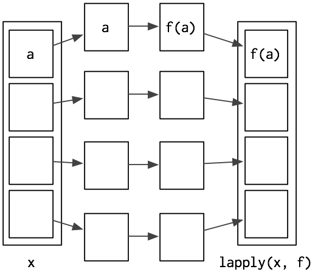
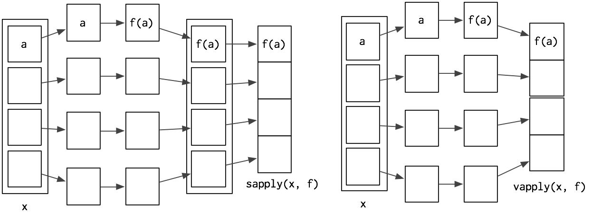
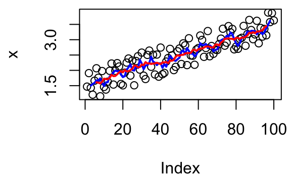
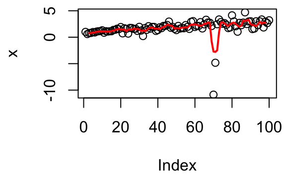
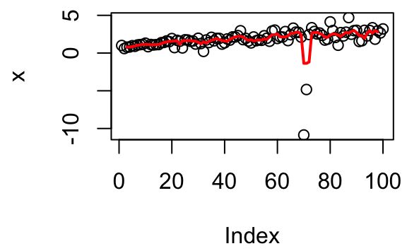

9 Functionals
“To become significantly more reliable, code must become more transparent. In particular, nested conditions and loops must be viewed with great suspicion. Complicated control flows confuse programmers. Messy code often hides bugs.”
— Bjarne Stroustrup
A higher-order function is a function that takes a function as an input or returns a function as output. We’ve already seen one type of higher order function: closures, functions returned by another function. The complement to a closure is a functional, a function that takes a function as an input and returns a vector as output. Here’s a simple functional: it calls the function provided as input with 1000 random uniform numbers.
randomise <- function(f) f(runif(1e3))
randomise(mean)
#> [1] 0.506
randomise(mean)
#> [1] 0.501
randomise(sum)
#> [1] 489The chances are that you’ve already used a functional: the three most frequently used are lapply(), apply(), and tapply(). All three take a function as input (among other things) and return a vector as output.
A common use of functionals is as an alternative to for loops. For loops have a bad rap in R. They have a reputation for being slow (although that reputation is only partly true, see modification in place for more details). But the real downside of for loops is that they’re not very expressive. A for loop conveys that it’s iterating over something, but doesn’t clearly convey a high level goal. Instead of using a for loop, it’s better to use a functional. Each functional is tailored for a specific task, so when you recognise the functional you know immediately why it’s being used. Functionals play other roles as well as replacements for for-loops. They are useful for encapsulating common data manipulation tasks like split-apply-combine, for thinking “functionally”, and for working with mathematical functions.
Functionals reduce bugs in your code by better communicating intent. Functionals implemented in base R are well tested (i.e., bug-free) and efficient, because they’re used by so many people. Many are written in C, and use special tricks to enhance performance. That said, using functionals will not always produce the fastest code. Instead, it helps you clearly communicate and build tools that solve a wide range of problems. It’s a mistake to focus on speed until you know it’ll be a problem. Once you have clear, correct code you can make it fast using the techniques you’ll learn in improving the speed of your code.
9.0.0.0.1 Outline
My first functional: lapply() introduces your first functional:
lapply().For loop functionals shows you variants of
lapply()that produce different outputs, take different inputs, and distribute computation in different ways.Data structure functionals discusses functionals that work with more complex data structures like matrices and arrays.
Functional programming teaches you about the powerful
Reduce()andFilter()functions which are useful for working with lists.Mathematical functionals discusses functionals that you might be familiar with from mathematics, like root finding, integration, and optimisation.
Loops that shouldn’t be converted to functions provides some important caveats about when you shouldn’t attempt to convert a loop into a functional.
A family of functions finishes off the chapter by showing you how functionals can take a simple building block and use it to create a set of powerful and consistent tools.
9.0.0.0.2 Prerequisites
You’ll use closures frequently used in conjunction with functionals. If you need a refresher, review closures.
9.1 My first functional: lapply()
The simplest functional is lapply(), which you may already be familiar with. lapply() takes a function, applies it to each element in a list, and returns the results in the form of a list. lapply() is the building block for many other functionals, so it’s important to understand how it works. Here’s a pictorial representation:

lapply() is written in C for performance, but we can create a simple R implementation that does the same thing:
lapply2 <- function(x, f, ...) {
out <- vector("list", length(x))
for (i in seq_along(x)) {
out[[i]] <- f(x[[i]], ...)
}
out
}From this code, you can see that lapply() is a wrapper for a common for loop pattern: create a container for output, apply f() to each component of a list, and fill the container with the results. All other for loop functionals are variations on this theme: they simply use different types of input or output.
lapply() makes it easier to work with lists by eliminating much of the boilerplate associated with looping. This allows you to focus on the function that you’re applying:
# Create some random data
l <- replicate(20, runif(sample(1:10, 1)), simplify = FALSE)
# With a for loop
out <- vector("list", length(l))
for (i in seq_along(l)) {
out[[i]] <- length(l[[i]])
}
unlist(out)
#> [1] 3 1 1 2 2 10 5 9 7 2 4 10 8 2 9 7 3 2 2 8
# With lapply
unlist(lapply(l, length))
#> [1] 3 1 1 2 2 10 5 9 7 2 4 10 8 2 9 7 3 2 2 8(I’m using unlist() to convert the output from a list to a vector to make it more compact. We’ll see other ways of making the output a vector shortly.)
Since data frames are also lists, lapply() is also useful when you want to do something to each column of a data frame:
# What class is each column?
unlist(lapply(mtcars, class))
#> mpg cyl disp hp drat wt qsec
#> "numeric" "numeric" "numeric" "numeric" "numeric" "numeric" "numeric"
#> vs am gear carb
#> "numeric" "numeric" "numeric" "numeric"
# Divide each column by the mean
mtcars[] <- lapply(mtcars, function(x) x / mean(x))The pieces of x are always supplied as the first argument to f. If you want to vary a different argument, you can use an anonymous function. The following example varies the amount of trimming applied when computing the mean of a fixed x.
trims <- c(0, 0.1, 0.2, 0.5)
x <- rcauchy(1000)
unlist(lapply(trims, function(trim) mean(x, trim = trim)))
#> [1] 0.2879 0.0790 0.0535 0.05029.1.1 Looping patterns
It’s useful to remember that there are three basic ways to loop over a vector:
- loop over the elements:
for (x in xs) - loop over the numeric indices:
for (i in seq_along(xs)) - loop over the names:
for (nm in names(xs))
The first form is usually not a good choice for a for loop because it leads to inefficient ways of saving output. With this form it’s very natural to save the output by extending a data structure, like in this example:
xs <- runif(1e3)
res <- c()
for (x in xs) {
# This is slow!
res <- c(res, sqrt(x))
}This is slow because each time you extend the vector, R has to copy all of the existing elements. Avoid copies discusses this problem in more depth. Instead, it’s much better to create the space you’ll need for the output and then fill it in. This is easiest with the second form:
res <- numeric(length(xs))
for (i in seq_along(xs)) {
res[i] <- sqrt(xs[i])
}Just as there are three basic ways to use a for loop, there are three basic ways to use lapply():
lapply(xs, function(x) {})
lapply(seq_along(xs), function(i) {})
lapply(names(xs), function(nm) {})Typically you’d use the first form because lapply() takes care of saving the output for you. However, if you need to know the position or name of the element you’re working with, you should use the second or third form. Both give you an element’s position (i, nm) and value (xs[[i]], xs[[nm]]). If you’re struggling to solve a problem using one form, you might find it easier with another.
9.1.2 Exercises
Why are the following two invocations of
lapply()equivalent?trims <- c(0, 0.1, 0.2, 0.5) x <- rcauchy(100) lapply(trims, function(trim) mean(x, trim = trim)) lapply(trims, mean, x = x)The function below scales a vector so it falls in the range [0, 1]. How would you apply it to every column of a data frame? How would you apply it to every numeric column in a data frame?
scale01 <- function(x) { rng <- range(x, na.rm = TRUE) (x - rng[1]) / (rng[2] - rng[1]) }Use both for loops and
lapply()to fit linear models to themtcarsusing the formulas stored in this list:formulas <- list( mpg ~ disp, mpg ~ I(1 / disp), mpg ~ disp + wt, mpg ~ I(1 / disp) + wt )Fit the model
mpg ~ dispto each of the bootstrap replicates ofmtcarsin the list below by using a for loop andlapply(). Can you do it without an anonymous function?bootstraps <- lapply(1:10, function(i) { rows <- sample(1:nrow(mtcars), rep = TRUE) mtcars[rows, ] })For each model in the previous two exercises, extract \(R^2\) using the function below.
rsq <- function(mod) summary(mod)$r.squared
9.2 For loop functionals: friends of lapply()
The key to using functionals in place of for loops is recognising that common looping patterns are already implemented in existing base functionals. Once you’ve mastered these existing functionals, the next step is to start writing your own: if you discover you’re duplicating the same looping pattern in many places, you should extract it out into its own function.
The following sections build on lapply() and discuss:
sapply()andvapply(), variants oflapply()that produce vectors, matrices, and arrays as output, instead of lists.Map()andmapply()which iterate over multiple input data structures in parallel.mclapply()andmcMap(), parallel versions oflapply()andMap().Writing a new function,
rollapply(), to solve a new problem.
9.2.1 Vector output: sapply and vapply
sapply() and vapply() are very similar to lapply() except they simplify their output to produce an atomic vector. While sapply() guesses, vapply() takes an additional argument specifying the output type. sapply() is great for interactive use because it saves typing, but if you use it inside your functions you’ll get weird errors if you supply the wrong type of input. vapply() is more verbose, but gives more informative error messages and never fails silently. It is better suited for use inside other functions.
The following example illustrates these differences. When given a data frame, sapply() and vapply() return the same results. When given an empty list, sapply() returns another empty list instead of the more correct zero-length logical vector.
sapply(mtcars, is.numeric)
#> mpg cyl disp hp drat wt qsec vs am gear carb
#> TRUE TRUE TRUE TRUE TRUE TRUE TRUE TRUE TRUE TRUE TRUE
vapply(mtcars, is.numeric, logical(1))
#> mpg cyl disp hp drat wt qsec vs am gear carb
#> TRUE TRUE TRUE TRUE TRUE TRUE TRUE TRUE TRUE TRUE TRUE
sapply(list(), is.numeric)
#> list()
vapply(list(), is.numeric, logical(1))
#> logical(0)If the function returns results of different types or lengths, sapply() will silently return a list, while vapply() will throw an error. sapply() is fine for interactive use because you’ll normally notice if something goes wrong, but it’s dangerous when writing functions.
The following example illustrates a possible problem when extracting the class of columns in a data frame: if you falsely assume that class only has one value and use sapply(), you won’t find out about the problem until some future function is given a list instead of a character vector.
df <- data.frame(x = 1:10, y = letters[1:10])
sapply(df, class)
#> x y
#> "integer" "factor"
vapply(df, class, character(1))
#> x y
#> "integer" "factor"
df2 <- data.frame(x = 1:10, y = Sys.time() + 1:10)
sapply(df2, class)
#> $x
#> [1] "integer"
#>
#> $y
#> [1] "POSIXct" "POSIXt"
vapply(df2, class, character(1))
#> Error in vapply(df2, class, character(1)): Werte müssen die Länge 1 haben,
#> Ergebnis von FUN(X[[2]]) hat aber Länge 2sapply() is a thin wrapper around lapply() that transforms a list into a vector in the final step. vapply() is an implementation of lapply() that assigns results to a vector (or matrix) of appropriate type instead of as a list. The following code shows a pure R implementation of the essence of sapply() and vapply() (the real functions have better error handling and preserve names, among other things).
sapply2 <- function(x, f, ...) {
res <- lapply2(x, f, ...)
simplify2array(res)
}
vapply2 <- function(x, f, f.value, ...) {
out <- matrix(rep(f.value, length(x)), nrow = length(f.value))
for (i in seq_along(x)) {
res <- f(x[[i]], ...)
stopifnot(
length(res) == length(f.value),
typeof(res) == typeof(f.value)
)
out[ ,i] <- res
}
out
}
vapply() and sapply() have different outputs from lapply(). The following section discusses Map(), which has different inputs.
9.2.2 Multiple inputs: Map (and mapply)
With lapply(), only one argument to the function varies; the others are fixed. This makes it poorly suited for some problems. For example, how would you find a weighted mean when you have two lists, one of observations and the other of weights?
# Generate some sample data
xs <- replicate(5, runif(10), simplify = FALSE)
ws <- replicate(5, rpois(10, 5) + 1, simplify = FALSE)It’s easy to use lapply() to compute the unweighted means:
unlist(lapply(xs, mean))
#> [1] 0.678 0.445 0.427 0.469 0.560But how could we supply the weights to weighted.mean()? lapply(x, means, w) won’t work because the additional arguments to lapply() are passed to every call. We could change looping forms:
unlist(lapply(seq_along(xs), function(i) {
weighted.mean(xs[[i]], ws[[i]])
}))
#> [1] 0.695 0.464 0.403 0.501 0.521This works, but it’s a little clumsy. A cleaner alternative is to use Map, a variant of lapply(), where all arguments can vary. This lets us write:
unlist(Map(weighted.mean, xs, ws))
#> [1] 0.695 0.464 0.403 0.501 0.521Note that the order of arguments is a little different: function is the first argument for Map() and the second for lapply().
This is equivalent to:
stopifnot(length(xs) == length(ws))
out <- vector("list", length(xs))
for (i in seq_along(xs)) {
out[[i]] <- weighted.mean(xs[[i]], ws[[i]])
}There’s a natural equivalence between Map() and lapply() because you can always convert a Map() to an lapply() that iterates over indices. But using Map() is more concise, and more clearly indicates what you’re trying to do.
Map is useful whenever you have two (or more) lists (or data frames) that you need to process in parallel. For example, another way of standardising columns is to first compute the means and then divide by them. We could do this with lapply(), but if we do it in two steps, we can more easily check the results at each step, which is particularly important if the first step is more complicated.
mtmeans <- lapply(mtcars, mean)
mtmeans[] <- Map(`/`, mtcars, mtmeans)
# In this case, equivalent to
mtcars[] <- lapply(mtcars, function(x) x / mean(x))If some of the arguments should be fixed and constant, use an anonymous function:
Map(function(x, w) weighted.mean(x, w, na.rm = TRUE), xs, ws)We’ll see a more compact way to express the same idea in the next chapter.
9.2.3 Rolling computations
What if you need a for loop replacement that doesn’t exist in base R? You can often create your own by recognising common looping structures and implementing your own wrapper. For example, you might be interested in smoothing your data using a rolling (or running) mean function:
rollmean <- function(x, n) {
out <- rep(NA, length(x))
offset <- trunc(n / 2)
for (i in (offset + 1):(length(x) - n + offset + 1)) {
out[i] <- mean(x[(i - offset):(i + offset - 1)])
}
out
}
x <- seq(1, 3, length = 1e2) + runif(1e2)
plot(x)
lines(rollmean(x, 5), col = "blue", lwd = 2)
lines(rollmean(x, 10), col = "red", lwd = 2)
But if the noise was more variable (i.e., it has a longer tail), you might worry that your rolling mean was too sensitive to outliers. Instead, you might want to compute a rolling median.
x <- seq(1, 3, length = 1e2) + rt(1e2, df = 2) / 3
plot(x)
lines(rollmean(x, 5), col = "red", lwd = 2)
To change rollmean() to rollmedian(), all you need to do is replace mean with median inside the loop. But instead of copying and pasting to create a new function, we could extract the idea of computing a rolling summary into its own function:
rollapply <- function(x, n, f, ...) {
out <- rep(NA, length(x))
offset <- trunc(n / 2)
for (i in (offset + 1):(length(x) - n + offset + 1)) {
out[i] <- f(x[(i - offset):(i + offset - 1)], ...)
}
out
}
plot(x)
lines(rollapply(x, 5, median), col = "red", lwd = 2)
You might notice that the internal loop looks pretty similar to a vapply() loop, so we could rewrite the function as:
rollapply <- function(x, n, f, ...) {
offset <- trunc(n / 2)
locs <- (offset + 1):(length(x) - n + offset + 1)
num <- vapply(
locs,
function(i) f(x[(i - offset):(i + offset)], ...),
numeric(1)
)
c(rep(NA, offset), num)
}This is effectively the same as the implementation in zoo::rollapply(), which provides many more features and much more error checking.
9.2.4 Parallelisation
One interesting thing about the implementation of lapply() is that because each iteration is isolated from all others, the order in which they are computed doesn’t matter. For example, lapply3() scrambles the order of computation, but the results are always the same:
lapply3 <- function(x, f, ...) {
out <- vector("list", length(x))
for (i in sample(seq_along(x))) {
out[[i]] <- f(x[[i]], ...)
}
out
}
unlist(lapply(1:10, sqrt))
#> [1] 1.00 1.41 1.73 2.00 2.24 2.45 2.65 2.83 3.00 3.16
unlist(lapply3(1:10, sqrt))
#> [1] 1.00 1.41 1.73 2.00 2.24 2.45 2.65 2.83 3.00 3.16This has a very important consequence: since we can compute each element in any order, it’s easy to dispatch the tasks to different cores, and compute them in parallel. This is what parallel::mclapply() (and parallel::mcMap()) does. (These functions are not available in Windows, but you can use the similar parLapply() with a bit more work. See parallelise for more details.)
library(parallel)
unlist(mclapply(1:10, sqrt, mc.cores = 4))
#> [1] 1.00 1.41 1.73 2.00 2.24 2.45 2.65 2.83 3.00 3.16In this case, mclapply() is actually slower than lapply(). This is because the cost of the individual computations is low, and additional work is needed to send the computation to the different cores and to collect the results.
If we take a more realistic example, generating bootstrap replicates of a linear model for example, the advantages are clearer:
boot_df <- function(x) x[sample(nrow(x), rep = T), ]
rsquared <- function(mod) summary(mod)$r.square
boot_lm <- function(i) {
rsquared(lm(mpg ~ wt + disp, data = boot_df(mtcars)))
}
system.time(lapply(1:500, boot_lm))
#> User System verstrichen
#> 0.567 0.008 0.580
system.time(mclapply(1:500, boot_lm, mc.cores = 2))
#> User System verstrichen
#> 0.003 0.007 0.326While increasing the number of cores will not always lead to linear improvement, switching from lapply() or Map() to its parallelised forms can dramatically improve computational performance.
9.2.5 Exercises
Use
vapply()to:Compute the standard deviation of every column in a numeric data frame.
Compute the standard deviation of every numeric column in a mixed data frame. (Hint: you’ll need to use
vapply()twice.)
Why is using
sapply()to get theclass()of each element in a data frame dangerous?The following code simulates the performance of a t-test for non-normal data. Use
sapply()and an anonymous function to extract the p-value from every trial.trials <- replicate( 100, t.test(rpois(10, 10), rpois(7, 10)), simplify = FALSE )Extra challenge: get rid of the anonymous function by using
[[directly.What does
replicate()do? What sort of for loop does it eliminate? Why do its arguments differ fromlapply()and friends?Implement a version of
lapply()that suppliesFUNwith both the name and the value of each component.Implement a combination of
Map()andvapply()to create anlapply()variant that iterates in parallel over all of its inputs and stores its outputs in a vector (or a matrix). What arguments should the function take?Implement
mcsapply(), a multicore version ofsapply(). Can you implementmcvapply(), a parallel version ofvapply()? Why or why not?
9.3 Manipulating matrices and data frames
Functionals can also be used to eliminate loops in common data manipulation tasks. In this section, we’ll give a brief overview of the available options, hint at how they can help you, and point you in the right direction to learn more. We’ll cover three categories of data structure functionals:
apply(),sweep(), andouter()work with matrices.tapply()summarises a vector by groups defined by another vector.the
plyrpackage, which generalisestapply()to make it easy to work with data frames, lists, or arrays as inputs, and data frames, lists, or arrays as outputs.
9.3.1 Matrix and array operations
So far, all the functionals we’ve seen work with 1d input structures. The three functionals in this section provide useful tools for working with higher-dimensional data structures. apply() is a variant of sapply() that works with matrices and arrays. You can think of it as an operation that summarises a matrix or array by collapsing each row or column to a single number. It has four arguments:
X, the matrix or array to summariseMARGIN, an integer vector giving the dimensions to summarise over, 1 = rows, 2 = columns, etc.FUN, a summary function...other arguments passed on toFUN
A typical example of apply() looks like this
a <- matrix(1:20, nrow = 5)
apply(a, 1, mean)
#> [1] 8.5 9.5 10.5 11.5 12.5
apply(a, 2, mean)
#> [1] 3 8 13 18There are a few caveats to using apply(). It doesn’t have a simplify argument, so you can never be completely sure what type of output you’ll get. This means that apply() is not safe to use inside a function unless you carefully check the inputs. apply() is also not idempotent in the sense that if the summary function is the identity operator, the output is not always the same as the input:
a1 <- apply(a, 1, identity)
identical(a, a1)
#> [1] FALSE
identical(a, t(a1))
#> [1] TRUE
a2 <- apply(a, 2, identity)
identical(a, a2)
#> [1] TRUE(You can put high-dimensional arrays back in the right order using aperm(), or use plyr::aaply(), which is idempotent.)
sweep() allows you to “sweep” out the values of a summary statistic. It is often used with apply() to standardise arrays. The following example scales the rows of a matrix so that all values lie between 0 and 1.
x <- matrix(rnorm(20, 0, 10), nrow = 4)
x1 <- sweep(x, 1, apply(x, 1, min), `-`)
x2 <- sweep(x1, 1, apply(x1, 1, max), `/`)The final matrix functional is outer(). It’s a little different in that it takes multiple vector inputs and creates a matrix or array output where the input function is run over every combination of the inputs:
# Create a times table
outer(1:3, 1:10, "*")
#> [,1] [,2] [,3] [,4] [,5] [,6] [,7] [,8] [,9] [,10]
#> [1,] 1 2 3 4 5 6 7 8 9 10
#> [2,] 2 4 6 8 10 12 14 16 18 20
#> [3,] 3 6 9 12 15 18 21 24 27 30Good places to learn more about apply() and friends are:
“Using apply, sapply, lapply in R” by Peter Werner.
“The infamous apply function” by Slawa Rokicki.
“The R apply function - a tutorial with examples” by axiomOfChoice.
The stackoverflow question “R Grouping functions:
sapplyvs.lapplyvs.applyvs.tapplyvs.byvs.aggregate”.
9.3.2 Group apply
You can think about tapply() as a generalisation to apply() that allows for “ragged” arrays, arrays where each row can have a different number of columns. This is often needed when you’re trying to summarise a data set. For example, imagine you’ve collected pulse rate data from a medical trial, and you want to compare the two groups:
pulse <- round(rnorm(22, 70, 10 / 3)) + rep(c(0, 5), c(10, 12))
group <- rep(c("A", "B"), c(10, 12))
tapply(pulse, group, length)
#> A B
#> 10 12
tapply(pulse, group, mean)
#> A B
#> 70.5 75.0tapply() works by creating a “ragged” data structure from a set of inputs, and then applying a function to the individual elements of that structure. The first task is actually what the split() function does. It takes two inputs and returns a list which groups elements together from the first vector according to elements, or categories, from the second vector:
split(pulse, group)
#> $A
#> [1] 69 71 74 66 71 67 73 69 73 72
#>
#> $B
#> [1] 73 79 74 72 74 76 76 68 77 74 79 78Then tapply() is just the combination of split() and sapply():
tapply2 <- function(x, group, f, ..., simplify = TRUE) {
pieces <- split(x, group)
sapply(pieces, f, simplify = simplify)
}
tapply2(pulse, group, length)
#> A B
#> 10 12
tapply2(pulse, group, mean)
#> A B
#> 70.5 75.0Being able to rewrite tapply() as a combination of split() and sapply() is a good indication that we’ve identified some useful building blocks.
9.3.3 The plyr package
One challenge with using the base functionals is that they have grown organically over time, and have been written by multiple authors. This means that they are not very consistent:
With
tapply()andsapply(), the simplify argument is calledsimplify. Withmapply(), it’s calledSIMPLIFY. Withapply(), the argument is absent.vapply()is a variant ofsapply()that allows you to describe what the output should be, but there are no corresponding variants fortapply(),apply(), orMap().The first argument of most base functionals is a vector, but the first argument in
Map()is a function.
This makes learning these operators challenging, as you have to memorise all of the variations. Additionally, if you think about the possible combinations of input and output types, base R only covers a partial set of cases:
| list | data frame | array | |
|---|---|---|---|
| list | lapply() |
sapply() |
|
| data frame | by() |
||
| array | apply() |
This was one of the driving motivations behind the creation of the plyr package. It provides consistently named functions with consistently named arguments and covers all combinations of input and output data structures:
| list | data frame | array | |
|---|---|---|---|
| list | llply() |
ldply() |
laply() |
| data frame | dlply() |
ddply() |
daply() |
| array | alply() |
adply() |
aaply() |
Each of these functions splits up the input, applies a function to each piece, and then combines the results. Overall, this process is called “split-apply-combine”. You can read more about it and plyr in “The Split-Apply-Combine Strategy for Data Analysis”, an open-access article published in the Journal of Statistical Software.
9.3.4 Exercises
How does
apply()arrange the output? Read the documentation and perform some experiments.There’s no equivalent to
split()+vapply(). Should there be? When would it be useful? Implement one yourself.Implement a pure R version of
split(). (Hint: useunique()and subsetting.) Can you do it without a for loop?What other types of input and output are missing? Brainstorm before you look up some answers in the plyr paper.
9.4 Manipulating lists
Another way of thinking about functionals is as a set of general tools for altering, subsetting, and collapsing lists. Every functional programming language has three tools for this: Map(), Reduce(), and Filter(). We’ve seen Map() already, and the following sections describe Reduce(), a powerful tool for extending two-argument functions, and Filter(), a member of an important class of functionals that work with predicates, functions that return a single TRUE or FALSE.
9.4.1 Reduce()
Reduce() reduces a vector, x, to a single value by recursively calling a function, f, two arguments at a time. It combines the first two elements with f, then combines the result of that call with the third element, and so on. Calling Reduce(f, 1:3) is equivalent to f(f(1, 2), 3). Reduce is also known as fold, because it folds together adjacent elements in the list.
The following two examples show what Reduce does with an infix and prefix function:
Reduce(`+`, 1:3) # -> ((1 + 2) + 3)
Reduce(sum, 1:3) # -> sum(sum(1, 2), 3)The essence of Reduce() can be described by a simple for loop:
Reduce2 <- function(f, x) {
out <- x[[1]]
for(i in seq(2, length(x))) {
out <- f(out, x[[i]])
}
out
}The real Reduce() is more complicated because it includes arguments to control whether the values are reduced from the left or from the right (right), an optional initial value (init), and an option to output intermediate results (accumulate).
Reduce() is an elegant way of extending a function that works with two inputs into a function that can deal with any number of inputs. It’s useful for implementing many types of recursive operations, like merges and intersections. (We’ll see another use in the final case study.) Imagine you have a list of numeric vectors, and you want to find the values that occur in every element:
l <- replicate(5, sample(1:10, 15, replace = T), simplify = FALSE)
str(l)
#> List of 5
#> $ : int [1:15] 10 8 8 1 10 6 6 7 3 9 ...
#> $ : int [1:15] 5 1 2 10 4 1 1 9 9 6 ...
#> $ : int [1:15] 1 6 2 7 9 10 8 9 4 6 ...
#> $ : int [1:15] 9 4 6 10 1 6 9 3 4 4 ...
#> $ : int [1:15] 4 4 7 7 1 8 1 7 2 3 ...You could do that by intersecting each element in turn:
intersect(intersect(intersect(intersect(l[[1]], l[[2]]),
l[[3]]), l[[4]]), l[[5]])
#> [1] 10 1 6 4 2That’s hard to read. With Reduce(), the equivalent is:
Reduce(intersect, l)
#> [1] 10 1 6 4 29.4.2 Predicate functionals
A predicate is a function that returns a single TRUE or FALSE, like is.character, all, or is.NULL. A predicate functional applies a predicate to each element of a list or data frame. There are three useful predicate functionals in base R: Filter(), Find(), and Position().
Filter()selects only those elements which match the predicate.Find()returns the first element which matches the predicate (or the last element ifright = TRUE).Position()returns the position of the first element that matches the predicate (or the last element ifright = TRUE).
Another useful predicate functional is where(), a custom functional that generates a logical vector from a list (or a data frame) and a predicate:
where <- function(f, x) {
vapply(x, f, logical(1))
}The following example shows how you might use these functionals with a data frame:
df <- data.frame(x = 1:3, y = c("a", "b", "c"))
where(is.factor, df)
#> x y
#> FALSE TRUE
str(Filter(is.factor, df))
#> 'data.frame': 3 obs. of 1 variable:
#> $ y: Factor w/ 3 levels "a","b","c": 1 2 3
str(Find(is.factor, df))
#> Factor w/ 3 levels "a","b","c": 1 2 3
Position(is.factor, df)
#> [1] 29.4.3 Exercises
Why isn’t
is.na()a predicate function? What base R function is closest to being a predicate version ofis.na()?Use
Filter()andvapply()to create a function that applies a summary statistic to every numeric column in a data frame.What’s the relationship between
which()andPosition()? What’s the relationship betweenwhere()andFilter()?Implement
Any(), a function that takes a list and a predicate function, and returnsTRUEif the predicate function returnsTRUEfor any of the inputs. ImplementAll()similarly.Implement the
span()function from Haskell: given a listxand a predicate functionf,spanreturns the location of the longest sequential run of elements where the predicate is true. (Hint: you might findrle()helpful.)
9.5 Mathematical functionals
Functionals are very common in mathematics. The limit, the maximum, the roots (the set of points where f(x) = 0), and the definite integral are all functionals: given a function, they return a single number (or vector of numbers). At first glance, these functions don’t seem to fit in with the theme of eliminating loops, but if you dig deeper you’ll find out that they are all implemented using an algorithm that involves iteration.
In this section we’ll use some of R’s built-in mathematical functionals. There are three functionals that work with functions to return single numeric values:
integrate()finds the area under the curve defined byf()uniroot()finds wheref()hits zerooptimise()finds the location of lowest (or highest) value off()
Let’s explore how these are used with a simple function, sin():
integrate(sin, 0, pi)
#> 2 with absolute error < 2.2e-14
str(uniroot(sin, pi * c(1 / 2, 3 / 2)))
#> List of 5
#> $ root : num 3.14
#> $ f.root : num 1.22e-16
#> $ iter : int 2
#> $ init.it : int NA
#> $ estim.prec: num 6.1e-05
str(optimise(sin, c(0, 2 * pi)))
#> List of 2
#> $ minimum : num 4.71
#> $ objective: num -1
str(optimise(sin, c(0, pi), maximum = TRUE))
#> List of 2
#> $ maximum : num 1.57
#> $ objective: num 1In statistics, optimisation is often used for maximum likelihood estimation (MLE). In MLE, we have two sets of parameters: the data, which is fixed for a given problem, and the parameters, which vary as we try to find the maximum. These two sets of parameters make the problem well suited for closures. Combining closures with optimisation gives rise to the following approach to solving MLE problems.
The following example shows how we might find the maximum likelihood estimate for \(\lambda\), if our data come from a Poisson distribution. First, we create a function factory that, given a dataset, returns a function that computes the negative log likelihood (NLL) for parameter lambda. In R, it’s common to work with the negative since optimise() defaults to finding the minimum.
poisson_nll <- function(x) {
n <- length(x)
sum_x <- sum(x)
function(lambda) {
n * lambda - sum_x * log(lambda) # + terms not involving lambda
}
}Note how the closure allows us to precompute values that are constant with respect to the data.
We can use this function factory to generate specific NLL functions for input data. Then optimise() allows us to find the best values (the maximum likelihood estimates), given a generous starting range.
x1 <- c(41, 30, 31, 38, 29, 24, 30, 29, 31, 38)
x2 <- c(6, 4, 7, 3, 3, 7, 5, 2, 2, 7, 5, 4, 12, 6, 9)
nll1 <- poisson_nll(x1)
nll2 <- poisson_nll(x2)
optimise(nll1, c(0, 100))$minimum
#> [1] 32.1
optimise(nll2, c(0, 100))$minimum
#> [1] 5.47We can check that these values are correct by comparing them to the analytic solution: in this case, it’s just the mean of the data, 32.1 and 5.467.
Another important mathematical functional is optim(). It is a generalisation of optimise() that works with more than one dimension. If you’re interested in how it works, you might want to explore the Rvmmin package, which provides a pure-R implementation of optim(). Interestingly Rvmmin is no slower than optim(), even though it is written in R, not C. For this problem, the bottleneck lies not in controlling the optimisation but with having to evaluate the function multiple times.
9.5.1 Exercises
Implement
arg_max(). It should take a function and a vector of inputs, and return the elements of the input where the function returns the highest value. For example,arg_max(-10:5, function(x) x ^ 2)should return -10.arg_max(-5:5, function(x) x ^ 2)should returnc(-5, 5). Also implement the matchingarg_min()function.Challenge: read about the fixed point algorithm. Complete the exercises using R.
9.6 Loops that should be left as is
Some loops have no natural functional equivalent. In this section you’ll learn about three common cases:
- modifying in place
- recursive functions
- while loops
It’s possible to torture these problems to use a functional, but it’s not a good idea. You’ll create code that is harder to understand, eliminating the main reason for using functionals in the first case.
9.6.1 Modifying in place
If you need to modify part of an existing data frame, it’s often better to use a for loop. For example, the following code performs a variable-by-variable transformation by matching the names of a list of functions to the names of variables in a data frame.
trans <- list(
disp = function(x) x * 0.0163871,
am = function(x) factor(x, labels = c("auto", "manual"))
)
for(var in names(trans)) {
mtcars[[var]] <- trans[[var]](mtcars[[var]])
}We wouldn’t normally use lapply() to replace this loop directly, but it is possible. Just replace the loop with lapply() by using <<-:
lapply(names(trans), function(var) {
mtcars[[var]] <<- trans[[var]](mtcars[[var]])
})The for loop is gone, but the code is longer and much harder to understand. The reader needs to understand <<- and how x[[y]] <<- z works (it’s not simple!). In short, we’ve taken a simple, easily understood for loop, and turned it into something few people will understand: not a good idea!
9.6.2 Recursive relationships
It’s hard to convert a for loop into a functional when the relationship between elements is not independent, or is defined recursively. For example, exponential smoothing works by taking a weighted average of the current and previous data points. The exps() function below implements exponential smoothing with a for loop.
exps <- function(x, alpha) {
s <- numeric(length(x) + 1)
for (i in seq_along(s)) {
if (i == 1) {
s[i] <- x[i]
} else {
s[i] <- alpha * x[i] + (1 - alpha) * s[i - 1]
}
}
s
}
x <- runif(6)
exps(x, 0.5)
#> [1] 0.0518 0.3078 0.5284 0.6148 0.5978 0.3628 NAWe can’t eliminate the for loop because none of the functionals we’ve seen allow the output at position i to depend on both the input and output at position i - 1.
One way to eliminate the for loop in this case is to solve the recurrence relation by removing the recursion and replacing it with explicit references. This requires a new set of mathematical tools, and is challenging, but it can pay off by producing a simpler function.
9.6.3 While loops
Another type of looping construct in R is the while loop. It keeps running until some condition is met. while loops are more general than for loops: you can rewrite every for loop as a while loop, but you can’t do the reverse. For example, we could turn this for loop:
for (i in 1:10) print(i)into this while loop:
i <- 1
while(i <= 10) {
print(i)
i <- i + 1
}Not every while loop can be turned into a for loop because many while loops don’t know in advance how many times they will be run:
i <- 0
while(TRUE) {
if (runif(1) > 0.9) break
i <- i + 1
}This is a common problem when you’re writing simulations.
In this case we can remove the loop by recognising a special feature of the problem. Here we’re counting the number of successes before Bernoulli trial with p = 0.1 fails. This is a geometric random variable, so you could replace the code with i <- rgeom(1, 0.1). Reformulating the problem in this way is hard to do in general, but you’ll benefit greatly if you can do it for your problem.
9.7 A family of functions
To finish off the chapter, this case study shows how you can use functionals to take a simple building block and make it powerful and general. I’ll start with a simple idea, adding two numbers together, and use functionals to extend it to summing multiple numbers, computing parallel and cumulative sums, and summing across array dimensions.
We’ll start by defining a very simple addition function, one which takes two scalar arguments:
add <- function(x, y) {
stopifnot(length(x) == 1, length(y) == 1,
is.numeric(x), is.numeric(y))
x + y
}(We’re using R’s existing addition operator here, which does much more, but the focus here is on how we can take very simple building blocks and extend them to do more.)
I’ll also add an na.rm argument. A helper function will make this a bit easier: if x is missing it should return y, if y is missing it should return x, and if both x and y are missing then it should return another argument to the function: identity. This function is probably a bit more general than what we need now, but it’s useful if we implement other binary operators.
rm_na <- function(x, y, identity) {
if (is.na(x) && is.na(y)) {
identity
} else if (is.na(x)) {
y
} else {
x
}
}
rm_na(NA, 10, 0)
#> [1] 10
rm_na(10, NA, 0)
#> [1] 10
rm_na(NA, NA, 0)
#> [1] 0This allows us to write a version of add() that can deal with missing values if needed:
add <- function(x, y, na.rm = FALSE) {
if (na.rm && (is.na(x) || is.na(y))) rm_na(x, y, 0) else x + y
}
add(10, NA)
#> [1] NA
add(10, NA, na.rm = TRUE)
#> [1] 10
add(NA, NA)
#> [1] NA
add(NA, NA, na.rm = TRUE)
#> [1] 0Why did we pick an identity of 0? Why should add(NA, NA, na.rm = TRUE) return 0? Well, for every other input it returns a number, so even if both arguments are NA, it should still do that. What number should it return? We can figure it out because addition is associative, which means that the order of addition doesn’t matter. That means that the following two function calls should return the same value:
add(add(3, NA, na.rm = TRUE), NA, na.rm = TRUE)
#> [1] 3
add(3, add(NA, NA, na.rm = TRUE), na.rm = TRUE)
#> [1] 3This implies that add(NA, NA, na.rm = TRUE) must be 0, and hence identity = 0 is the correct default.
Now that we have the basics working, we can extend the function to deal with more complicated inputs. One obvious generalisation is to add more than two numbers. We can do this by iteratively adding two numbers: if the input is c(1, 2, 3) we compute add(add(1, 2), 3). This is a simple application of Reduce():
r_add <- function(xs, na.rm = TRUE) {
Reduce(function(x, y) add(x, y, na.rm = na.rm), xs)
}
r_add(c(1, 4, 10))
#> [1] 15This looks good, but we need to test a few special cases:
r_add(NA, na.rm = TRUE)
#> [1] NA
r_add(numeric())
#> NULLThese are incorrect. In the first case, we get a missing value even though we’ve explicitly asked to ignore them. In the second case, we get NULL instead of a length one numeric vector (as we do for every other set of inputs).
The two problems are related. If we give Reduce() a length one vector, it doesn’t have anything to reduce, so it just returns the input. If we give it an input of length zero, it always returns NULL. The easiest way to fix this problem is to use the init argument of Reduce(). This is added to the start of every input vector:
r_add <- function(xs, na.rm = TRUE) {
Reduce(function(x, y) add(x, y, na.rm = na.rm), xs, init = 0)
}
r_add(c(1, 4, 10))
#> [1] 15
r_add(NA, na.rm = TRUE)
#> [1] 0
r_add(numeric())
#> [1] 0r_add() is equivalent to sum().
It would be nice to have a vectorised version of add() so that we can perform the addition of two vectors of numbers in element-wise fashion. We could use Map() or vapply() to implement this, but neither is perfect. Map() returns a list, instead of a numeric vector, so we need to use simplify2array(). vapply() returns a vector but it requires us to loop over a set of indices.
v_add1 <- function(x, y, na.rm = FALSE) {
stopifnot(length(x) == length(y), is.numeric(x), is.numeric(y))
if (length(x) == 0) return(numeric())
simplify2array(
Map(function(x, y) add(x, y, na.rm = na.rm), x, y)
)
}
v_add2 <- function(x, y, na.rm = FALSE) {
stopifnot(length(x) == length(y), is.numeric(x), is.numeric(y))
vapply(seq_along(x), function(i) add(x[i], y[i], na.rm = na.rm),
numeric(1))
}A few test cases help to ensure that it behaves as we expect. We’re a bit stricter than base R here because we don’t do recycling. (You could add that if you wanted, but I find that recycling is a frequent source of silent bugs.)
# Both versions give the same results
v_add1(1:10, 1:10)
#> [1] 2 4 6 8 10 12 14 16 18 20
v_add1(numeric(), numeric())
#> numeric(0)
v_add1(c(1, NA), c(1, NA))
#> [1] 2 NA
v_add1(c(1, NA), c(1, NA), na.rm = TRUE)
#> [1] 2 0Another variant of add() is the cumulative sum. We can implement it with Reduce() by setting the accumulate argument to TRUE:
c_add <- function(xs, na.rm = FALSE) {
Reduce(function(x, y) add(x, y, na.rm = na.rm), xs,
accumulate = TRUE)
}
c_add(1:10)
#> [1] 1 3 6 10 15 21 28 36 45 55
c_add(10:1)
#> [1] 10 19 27 34 40 45 49 52 54 55This is equivalent to cumsum().
Finally, we might want to define addition for more complicated data structures like matrices. We could create row and col variants that sum across rows and columns, respectively, or we could go the whole hog and define an array version that could sum across any arbitrary set of dimensions. These are easily implemented as combinations of r_add() and apply().
row_sum <- function(x, na.rm = FALSE) {
apply(x, 1, r_add, na.rm = na.rm)
}
col_sum <- function(x, na.rm = FALSE) {
apply(x, 2, r_add, na.rm = na.rm)
}
arr_sum <- function(x, dim, na.rm = FALSE) {
apply(x, dim, r_add, na.rm = na.rm)
}The first two are equivalent to rowSums() and colSums().
If every function we have created has an existing equivalent in base R, why did we bother? There are two main reasons:
Since all variants were implemented by combining a simple binary operator (
add()) and a well-tested functional (Reduce(),Map(),apply()), we know that our variants will behave consistently.We can apply the same infrastructure to other operators, especially those that might not have the full suite of variants in base R.
The downside of this approach is that these implementations are not that efficient. (For example, colSums(x) is much faster than apply(x, 2, sum).) However, even if they aren’t that fast, simple implementations are still a good starting point because they’re less likely to have bugs. When you create faster versions, you can compare the results to make sure your fast versions are still correct.
If you enjoyed this section, you might also enjoy “List out of lambda”, a blog article by Steve Losh that shows how you can produce high level language structures (like lists) out of more primitive language features (like closures, aka lambdas).
9.7.1 Exercises
Implement
smallerandlargerfunctions that, given two inputs, return either the smaller or the larger value. Implementna.rm = TRUE: what should the identity be? (Hint:smaller(x, smaller(NA, NA, na.rm = TRUE), na.rm = TRUE)must bex, sosmaller(NA, NA, na.rm = TRUE)must be bigger than any other value of x.) Usesmallerandlargerto implement equivalents ofmin(),max(),pmin(),pmax(), and new functionsrow_min()androw_max().Create a table that has and, or, add, multiply, smaller, and larger in the columns and binary operator, reducing variant, vectorised variant, and array variants in the rows.
Fill in the cells with the names of base R functions that perform each of the roles.
Compare the names and arguments of the existing R functions. How consistent are they? How could you improve them?
Complete the matrix by implementing any missing functions.
How does
paste()fit into this structure? What is the scalar binary function that underliespaste()? What are thesepandcollapsearguments topaste()equivalent to? Are there anypastevariants that don’t have existing R implementations?